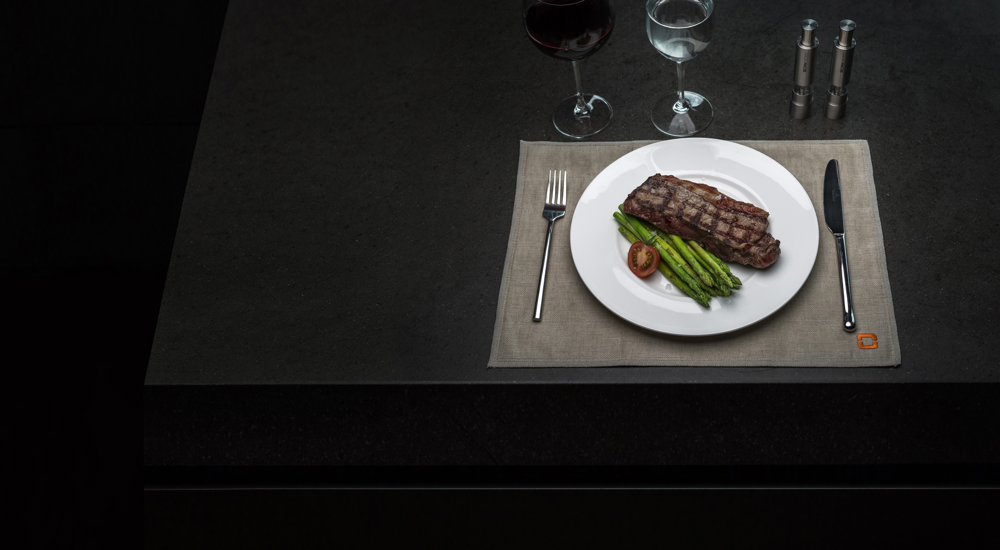
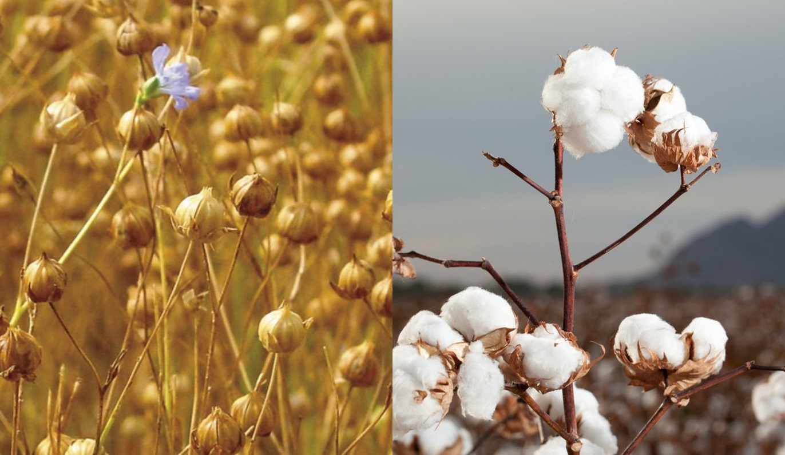
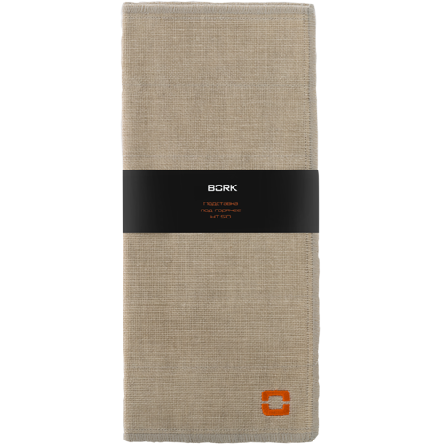

Салфетка под тарелку BORK HT510
Инновационный текстиль, при производстве которого используются и новейшие технологии, и традиционные японские техники производства. Сочетание традиционности и инновации, рождает по истине уникальный продукт.
Отличительной особенностью данного текстиля является уникальное многослойные плетение, которое одновременно придаёт мягкость текстилю и в то же время, многократно увеличивает количество впитываемой воды. Также, за счёт многослойности, есть возможность сочетания нескольких видов пряжи, что позволяет придавать изделиям свойства, которые до этого невозможно было совместить в одном виде текстиля.
Фабрика Маруяма была основана в 1930 году, в самом сердце Японии, в префектуре Нара, недалеко от древней столицы Японии Киото. Впитав многовековую историю самой Японии и основываясь на традиционных техниках ткачества, фабрика производила москитные сетки для японских домов. В последствии, в связи с угасанием спроса, фабрика перешла на производство домашнего текстиля, используя традиционную технику и в то же время современные технологии и оборудование. На сегодняшний день, фабрика является одним из основных поставщиков традиционных японских отелей «рёкан» по всей Японии, символизируя традиционные ценности Японии.

Рёкан – гостиница в традиционном японском стиле.
Салфетка под тарелку BORK HT510 размером 31 x 42 см. соткано в 6 слоев из ткани, состоящей на 50% из органического льна и на 50% из органического хлопка, выращенного в США. Благодаря отсутствию в составе красителей текстиль имеет натуральный цвет и подходит к цветовой гамме любого интерьера. Технология многослойного плетения делает салфетку непревзойденно мягкой и отлично впитывающей влагу.
Внимание: в процессе производства, кухонные текстиль прошел процедуру накрахмаливания. Перед первым использованием, необходимо выстирать текстиль в тёплой воде.